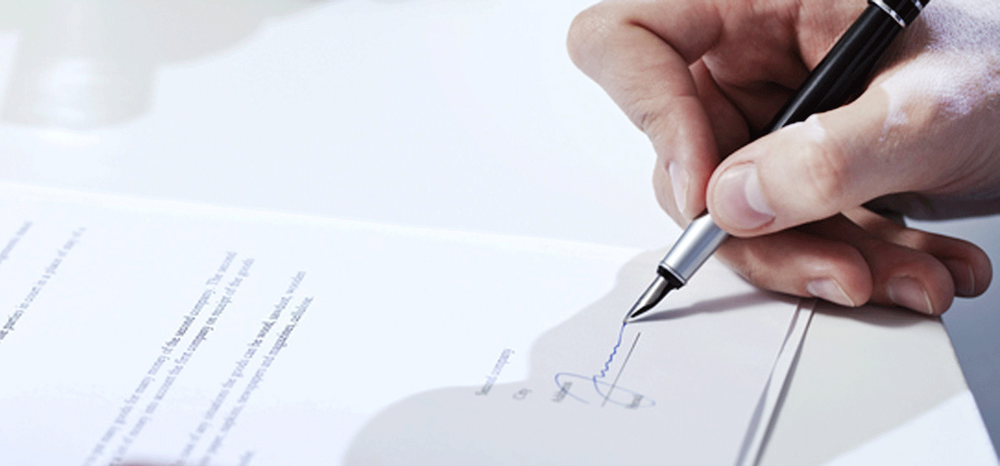
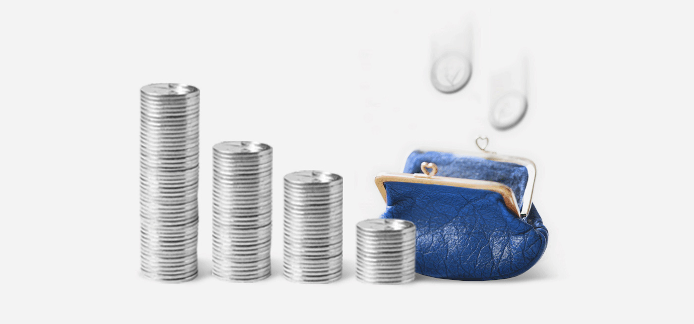
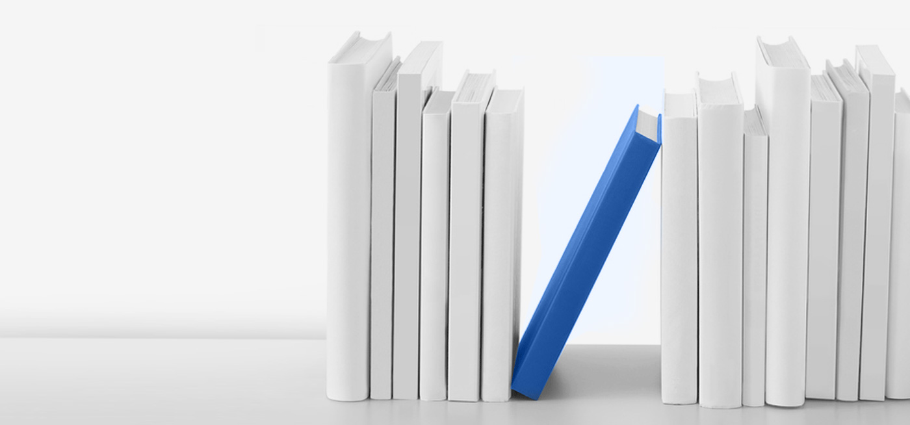
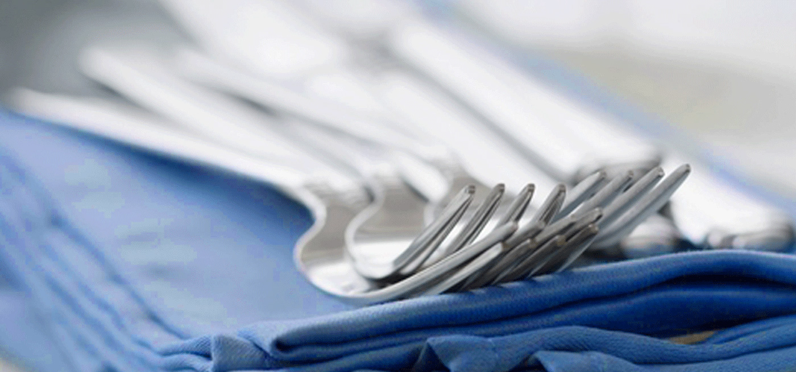
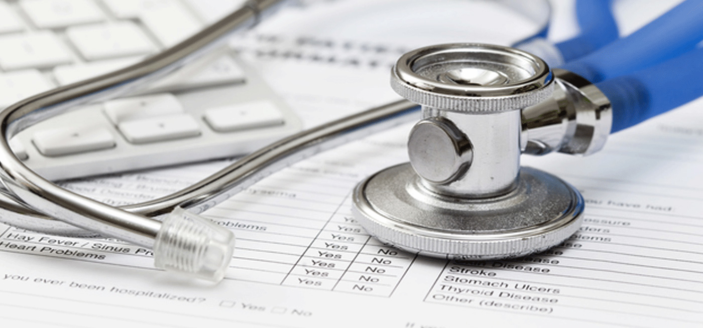
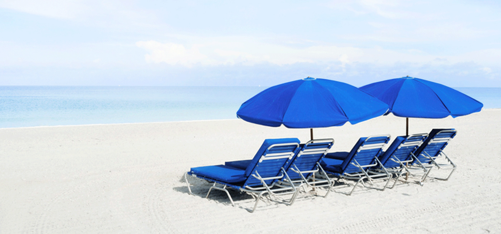

-
근무제도
주 5일 근무(09시~18시, 주40시간), 연차를 제공합니다.
-
합리적인 연봉제

객관적 평가 기준에 근거한 연봉제를 제공합니다.
-
레저휴가
매월 네 번째 금요일을 레저 휴가일로 지정, 월 1회 주4일 근무를 실현하고 있습니다.
10만원의 휴가 비용을 지원해 보는 여유로운 레저활동을 보장합니다.
-
복지기금 연 80만 포인트 지급

자유롭게 사용할 수 있는 80만 포인트의 복지기금을 매년 지급합니다.
-
업무관련 희망도서 구입

업무관련 도서를 접수받아 구입하고, 함께 읽을 수 있도록 비치하고 있습니다.
-
점심식사 비용 지원

1일 7천원 중식 식대를 지원합니다.
-
건강검진

직원의 건강관리를 위해 권위 있는 종합검진센터에서 건강검진을 실시합니다.
-
Refresh 휴가제도

입사 후 만 7년이 되면 1개월의 유급휴가를 지원합니다.